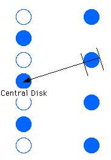
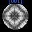

Desktop
Manual
Desktop
Manual
Bloch Calculations
Note: All calculations generated using this menu are fully dynamic
and include all the diffraction g-vectors plotted on the screen. To speed
up calculations, simply delete spots from the diffraction pattern and they
will not be included.
CBED:Bloch Calculations:
CBED:Bloch Calculations:Thru Thickness Calculations:
This item will generate a Plot of the Intensity for the selected point,at
the selected orientation, versus thickness of the sample. Simply click
on the point of interest and the plot will be generated. The spot is taken
as the dead center of the CBED disk selected by the user.
CBED:Bloch Calculations:Thru Tilt:
This item will generate a Plot of Intensity as a function of position in
the CBED Disk. Currently, the calculation is generated by drawing a line
from the Beam Direction to the center of the selected CBED disk. Then
calculating intensities along this line from the point on the CBED disk
furthest from the origin to the point closest to the origin. See Figure:

For the Central Disk, intensities are deteremined vertically and then
horizontally, in alternate calculations.
NOTE:
CBED:Bloch Calculations:Critical Voltage:
At a particular orientation, intensity will very with variation in the accelerating
voltage of the microscopie. This function will cause a calculation of intensity
versus voltage for the selected diffraction spot at the current orientation.
CBED:Bloch Calculations:Full Dynamic (1 spot):
Selecting Full Dynamic (1 spot) and clicking on a diffraction
spot will generate a complete xy map of intensity for the selected disk.
CBED:Bloch Calculations:Full Dynamic (All Spots):
Selecting Full Dynamic (All Spots) will immediately allow a full dynamic
calculation of all the currently excited disks.
CBED:Bloch Calculations:Set Perturbations:
Sometimes, you may wish to see the effect of particular spots on the intensity
of another spot. This goal can be accopmlished by indicating to Desktop
that it should treat the particular spot using perturbation theory. Select
this item and then click on any spots which you which to be treated as perturbations.
CBED:Bloch Calculations:Increase Plot Res.:
Increases the number of points (by 30%) calculated when deteriming an x-y
graph of intensity versus a particular parameter.
CBED:Bloch Calculations:Decrease Plot Res:
Decreases the number of points (by 30%) calculated when deteriming an x-y
graph of intensity versus a particular parameter.
Author:James T. Stanley J.
Stanley
Desktop
Manual
Distributed By: Virtual
Labs
Last Updated:1/12/96 Sat, Apr 27, 1996